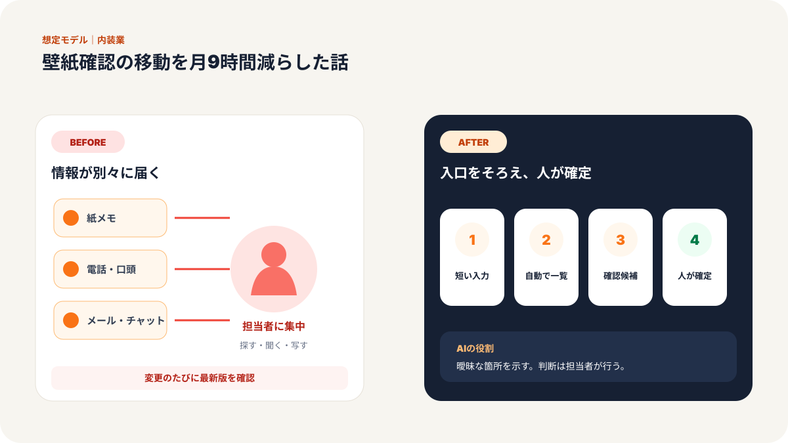
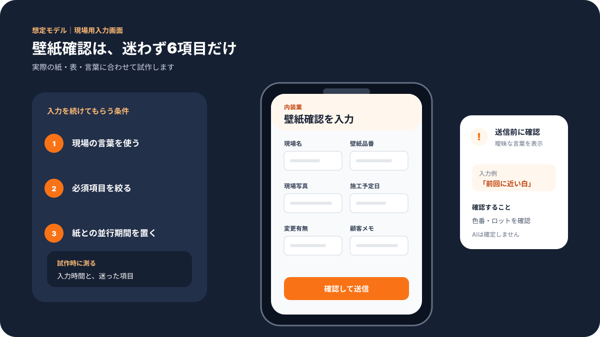
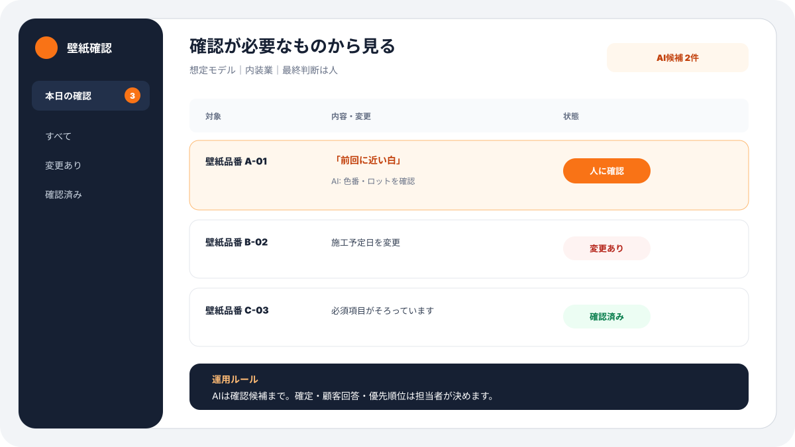
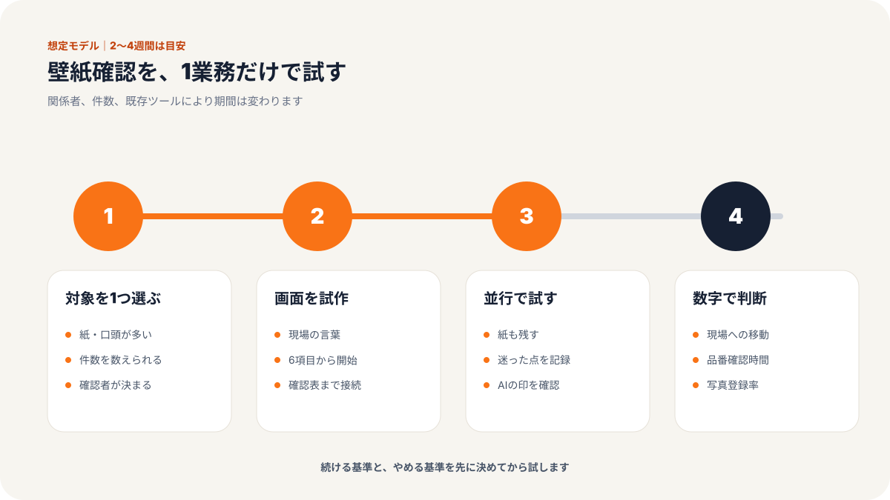
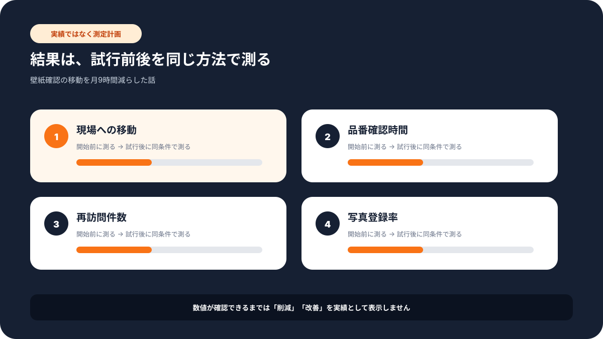

現場での使い方
この記事で変わる業務の流れ
「誰が入力し、誰が確認するか」までイメージできるよう、想定画面と導入手順をまとめています。





# 従業員12名の内装会社／壁紙確認の移動を月9時間減らした話
> 建設・内装業 × 営業・現場確認 × 従業員12名の事例
壁紙の品番が分からない。
写真だけでは確信が持てない。
そのたびに、経験のある担当者が現地へ向かう。
大阪府東大阪市の株式会社コマツでは、こうした壁紙の識別に商品ごと平均1〜3時間かかり、目視確認のための移動も発生していました。
同社が取り組んだのは、単に新しいAIを契約することではありません。
職人がどこを見て判断しているのかを画像と情報に分け、現場や取引先でも使える形に整えることでした。
経済産業省「DXセレクション2026 選定企業レポート」によると、壁紙AI識別アプリ「かべぴた」は識別精度90％以上。営業職1人あたり月平均約9時間、移動距離138kmを削減しています。
この事例から分かるのは、職人技をAIに置き換える話ではありません。
熟練者にしか見えていなかった判断材料を、会社の共有財産に変える方法です。
課題：壁紙の確認だけで平均1〜3時間、現地移動も必要だった
内装の補修や張り替えでは、既存の壁紙に近い商品を探す場面があります。
見た目が似ていても、柄の細かさ、色味、表面の凹凸、製造時期などで候補は変わります。
カタログだけで判断できなければ、経験のある人が写真を見直し、それでも分からなければ現地へ行く必要があります。
小さな会社では、確認できる人が営業や見積もりも兼ねていることが少なくありません。
確認依頼が入るたびに予定が分断されます。
往復の移動が増えれば、顧客への回答も遅れます。
課題を平易に整理すると、次の3点でした。
- 判断の根拠が、経験者の頭の中にある
- 写真、品番、施工条件が別々に保管されている
- 分からない時の確認先が、一部の人に集中する
「AIを入れれば解決する」と考える前に、まずこの状態をほどく必要があります。
施策：職人の判断を、画像と確認手順に分けた
同社は同志社大学と連携し、壁紙を識別するためのAIアプリを開発しました。
ここで重要なのは、アプリ名や技術ではなく、準備の順番です。
ステップ1：問い合わせが多い判断から対象を絞る
職人の仕事を全部AIに任せようとすると、必要な情報が広がりすぎます。
そこで、繰り返し発生し、移動負担が大きい「壁紙の識別」に対象を絞りました。
対象が明確なら、集める写真や正解も決めやすくなります。
ステップ2：写真と正解だけでなく、判断条件も残す
AIに写真を読ませるだけでは、現場で使える精度には届きません。
どの部分を見たか。
どの候補と比べたか。
施工場所や年代はどうか。
職人が無意識に確認している条件を、入力できる情報へ変えていきます。
これは、紙や口頭の仕事を「情報をためておく場所」へ移す作業です。
ステップ3：AIの候補と、人に戻す条件を決める
AIの答えをそのまま確定にしません。
候補が十分に絞れない場合、似た商品が複数ある場合、現場条件が特殊な場合は、経験者へ戻します。
AIが得意な大量比較と、人が得意な最終判断を分けることで、確認の安全性を保ちます。
ステップ4：識別だけで終わらず、受発注へつなげる
壁紙が分かっても、その後の在庫確認、見積もり、発注が別々なら、手間は残ります。
同社は受発注の仕組みも見直し、現場、取引先、資材メーカーが使える形へ広げています。
AI単体ではなく、仕事の流れに組み込んだことが定着のポイントです。
成果：識別精度90％以上、移動時間と距離を削減
公表資料に基づく主な変化は次の通りです。
| 項目 | Before | After |
|---|---|---|
| 壁紙の識別 | 商品ごと平均1〜3時間 | AIが候補を提示し確認を支援 |
| 識別精度 | 経験者の目視に依存 | 90％以上 |
| 営業職1人の移動時間 | 現地確認のたびに発生 | 月平均約9時間削減 |
| 営業職1人の移動距離 | 現地確認のたびに発生 | 月平均138km削減 |
| 年間休日 | 100日 | 127日 |
会員数は37,000人以上とされ、社内だけでなく関係者へ知識を広げる仕組みになっています。
もちろん、年間休日の変化を壁紙識別だけの効果と断定することはできません。
受発注を含む複数の改善を重ねた結果として見る必要があります。
それでも、月9時間と138kmという数字は、確認のための移動が経営課題になることを具体的に示しています。
なぜ効果が出たのか：AIより先に「判断の材料」を整えた
この事例が参考になる理由は、最初から大きな仕組みを作らなかったことです。
よくある失敗は、職人技を全部文章にしようとすることです。
しかし、熟練者の判断は写真、触感、状況、過去の記憶が混ざっています。
全部を一度に扱うのではなく、写真で比較しやすい壁紙に絞り、正解と条件を集めました。
もう一つは、経験者を不要にする方向へ進めなかったことです。
経験者の役割は、毎回現地へ行くことから、難しい案件を確認し、判断基準を更新することへ変わります。
負担を減らしながら、知識を次の人へ渡せます。
他の業種でも使える：写真で確認する仕事から始める
同じ考え方は、壁紙以外にも応用できます。
- 製造業：傷、汚れ、部品違いの一次確認
- 建設業：施工写真から不足項目を確認
- 設備保守：メーターや配管の写真から確認候補を提示
- 小売業：商品写真から型番候補を探す
- 介護・福祉：備品写真の分類や補充確認。ただし利用者情報は扱わない範囲から始める
始める時は、正解が残っている仕事、件数が多い仕事、間違えた時に人へ戻せる仕事を選びます。
AIの精度だけでなく、移動時間、回答時間、経験者への照会件数も一緒に測ると、効果が見えます。
最初の4週間で確認する数字
最初から90％以上の精度を目標にする必要はありません。
まず、週に何件の照会があり、そのうち何件で現地移動が発生したかを数えます。
次に、AIの候補で解決した件数、人へ戻した件数、誤った候補を出した件数を記録します。
回答が速くなっても、間違いが増えれば改善ではありません。
時間、正確さ、人へ戻せることの3つを並べ、使える範囲を少しずつ広げます。
まとめ：職人技を減らすのではなく、使える人を増やす
従業員12名の内装会社が行ったのは、職人の代わりを作ることではありませんでした。
熟練者の判断を、画像、正解、確認条件へ分け、AIが候補を出し、人が最終確認できる流れを作りました。
その結果、識別精度90％以上、営業職1人あたり月9時間・138kmの移動削減につながっています。
自社にも「この人が見ないと分からない写真」「確認のためだけに移動している仕事」があれば、改善の候補です。
気になる業務があれば、お気軽にお声がけください。弊社では、中小企業のAI活用と業務システムづくりを、今の仕事を活かしながら段階的に支援しています。